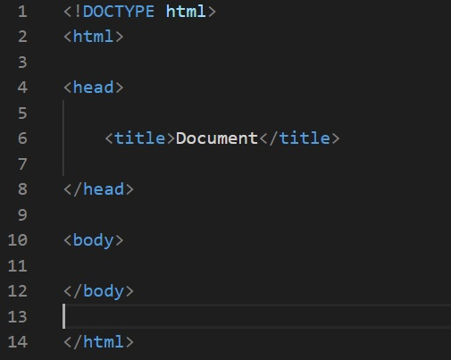

[12월]
1. HTML 문서 선언
1) 모든 html 문서 시작은 <!DOCTYPE>로 '이 문서는 html 문서다' 라는 것을 알려준다
2) 그리고 <html>로 html을 시작해야 하고 반드시 </html>로 끝맺음을 알려야 한다.
보통 대부분 요소는 열었으면 반드시 닫아야 한다. 실행하려고 했는데 이상하다면, /를 확인하라
3) 그리고 <head>를 선언하고, 여기는 문서에 대한 정보가 담기는 곳이다.
예를들면, title, link(css, java 등), font 등의 정보를 담을 수 있다.
4) 위에 까진 '이게 html문서다' 라는 알려주는 베이스 였다면 , <body>는 콘텐츠를 담아서
실제 사용자에게 보여주는 화면이 된다.
만약 올바로 구성을 완료 했다면, 다음과 같은 모양일 것이다.

2. tag 종류
1) br tag : 줄 바꿈
- <br>로 선언, /닫는거 없음.
2) hr tag : 수평선
- <hr> 로 선언, /닫는거 없음.
- 위의 선이 hr tag 효과
3) p tag 문단 구성
-<p> 와 </p>로 구성
공간이 넓어진 이유, 줄바꿈효과, pre효과를 안받는듯
4) pre tag : 공백을 그대로 살려둠(고정폭글꼴)
이 아래 여백이 있는 것도 코딩화면에서도 띄워져 있기 때문
5) table tag : 테이블을 만들 수 있다. 같이 쓰는 th, tr, td 태그
-th : 테이블 제목 태그
-tr : 테이블 row ,행 태그
-td : 테이블 칸에 들어가는 데이터 태그
3. 제목글자태그
1) h1 입니다.
?왜작지?2) h2 입니다.
3) h3 입니다.
4) h4 입니다.
5) h5 입니다.
6) h6 입니다.
4. 예약어
1) < ----- <
2) > ----- >
3) (공백) -----
4) & ----- &
5) © ----- ©
6) ® ----- ®
5. 내가 좋아하는 시
[흔들리며 피는 꽃]
-도종환-
흔들리지 않고피는 꽃이 어디 있으랴
이 세상 그 어떤 아름다운 꽃들도
다 흔들리며 피었나니
흔들리면서 줄기를 곧게 세웠나니
흔들리지 않고 가는 사람이 어디 있으랴
젖지 않고 피는 꽃이 어디 있으랴
이 세상 그 어떤 빛나는 꽃들도
다 젖으며 젖으며 피었나니
바람과 비에 젖으며 꽃잎 따뜻하게 피었나니
젖지 않고 가는 삶이 어디 있으랴